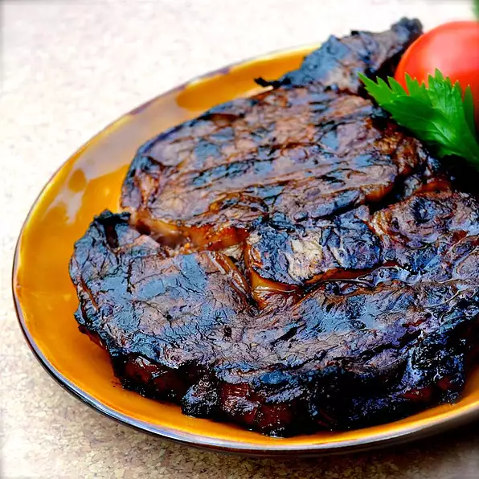

Home Page
Ribeye Steaks

Homemade Ribeye Steaks
The following recipe describes in detail how to make the perfect ribeye steaks at home using simple ingredients.
Ingredients
- 2 (8 oz) boneless ribeye steaks
- salt and ground black pepper to taste
- 1 pinch garlic, or to taste
- 1 pinch Montreal steak seasoning, or to taste
Marinade
- ⅓ cup extra virgin olive oil
- ⅓ cup Worcestershire sauce
- ⅓ cup soy sauce
- ⅓ cup balsamic vinegar
- 3 tablespoons Dijon mustard
- 3 cloves garlic, chopped
- 1 dash liquid smoke flavoring
Directions
- Place steaks in a flat baking dish or container. Cut slits at 1-inch intervals in the fat around the edges
of the steaks. Gently pierce both sides of each steak a few times with a fork.
- Sprinkle each steak with salt, pepper, garlic powder, and Montreal steak seasoning. Pat seasonings into
steaks.
- Whisk olive oil, Worcestershire sauce, soy sauce, balsamic vinegar, Dijon mustard, garlic, and liquid smoke
together in a bowl. Pour marinade over steaks to coat. Cover container or baking dish with plastic wrap and
marinate steaks in the refrigerator for 2 hours. Turn steaks over and marinate for another 2 hours.
- Preheat an outdoor grill for medium-high heat and lightly oil the grate.
- Cook the steaks on the preheated grill until they start to firm, and are reddish-pink and juicy in the
center, 8 to 10 minutes per side for medium-rare. An instant-read thermometer inserted into the center
should read 130 degrees F (54 degrees C).